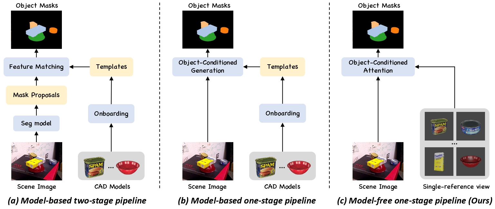

Model-free by design
No CAD model, reconstructed geometry, or exhaustive 3D template bank is required at inference time.
Segment unseen objects from one image with a single reference view via a single feed-forward pass.

Tell the model what to segment by showing it once.
Foundation segmentation models generate strong class-agnostic masks, yet they struggle to associate those masks with a specific target. SOS closes this semantic gap with a single reference image for each object. Its Object-Conditional Transformer jointly identifies the target and predicts its mask in one streamlined pass.
No CAD model, reconstructed geometry, or exhaustive 3D template bank is required at inference time.
Object-conditioned queries carry target identity directly into the segmentation decoder.
Mask generation and target identification are unified instead of being handled by disconnected proposal and matching stages.
Object conditioning, end to end.
A frozen DINOv3 backbone provides visual features. SOS turns the reference into identity-anchored queries and decodes them against the query image to produce target-specific masks.
SOS reaches 58.8 average AP from one reference image per object, with no CAD model or onboarding cost.
Model-based · 42 CAD reference images
Model-free · one reference image
Predictions on LM-O, YCB-V, and TUD-L compared with CNOS, SAM6D, and ground-truth masks.
Build on SOS.
If this project supports your research, please cite our BMVC 2026 paper.
@inproceedings{hu2026sos,
title = {{SOS!}: A Streamlined Object-Conditional Transformer for Model-free Segmentation},
author = {Hu, Jiaqi and Huang, Junwen and Xu, Hongli and Yu, Peter KT and Navab, Nassir and Busam, Benjamin and Ilic, Slobodan},
booktitle = {Proceedings of the British Machine Vision Conference (BMVC)},
year = {2026}
}